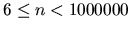

| Goldbach's Conjecture |
In 1742, Christian Goldbach, a German amateur mathematician, sent a letter to Leonhard Euler in which he made the following conjecture:
Every number greater than 2 can be written as the sum of three prime numbers.
Goldbach cwas considering 1 as a primer number, a convention that is no longer followed. Later on, Euler re-expressed the conjecture as:
Every even number greater than or equal to 4 can be expressed as the sum of two prime numbers.
For example:
Today it is still unproven whether the conjecture is right. (Oh wait, I have the proof of course, but it is too long to write it on the margin of this page.)
Anyway, your task is now to verify Goldbach's conjecture as expressed by Euler for all even numbers less than a million.
Each test case consists of one even integer n with .
Input will be terminated by a value of 0 for n.
If there is no such pair, print a line saying ``Goldbach's conjecture is wrong."
8 20 42 0
8 = 3 + 5 20 = 3 + 17 42 = 5 + 37